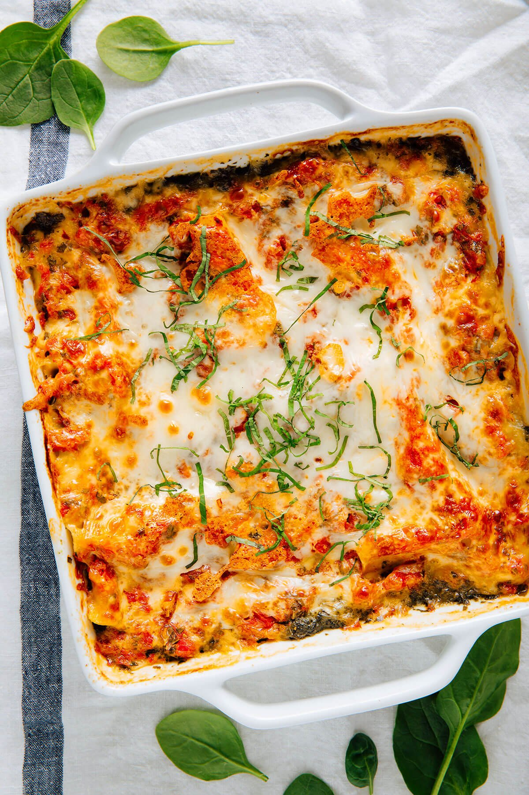

Spinach Lasagna

Description
This spinach lasagna is gloriously cheesy, perfectly saucy, and fully loaded with fresh sautéed spinach. It's worthy of special occasions and holidays, and such a treat on a chilly weekend.
If you're craving a meatless main dish with familiar flavors, this spinach lasagna is the answer. The sauce is made from scratch and sets this lasagna apart from your average recipe. It's comfort food at its finest.
Ingredients
Tomato sauce
- 1 can (28 ounces) diced tomatoes
- 1/4 cup roughly chopped fresh basil
- 2 tablespoons olive oil
- 2 garlic cloves, pressed or minced
- 1/2 teaspoon fine salt
- 1/4 teaspoon red pepper flakes (optional)
Spinach mixture
- 2 cups (16 ounces) low-fat cottage cheese
- 2 tablespoons olive oil
- 1 small-to-medium yellow onion, chopped
- 1/4 teaspoon fine salt
- 4 cloves garlic, pressed or minced
- 12 ounces baby spinach, preferably organic
- Freshly ground black pepper, to taste
Remaining lasagna ingredients
- 9 no-boil lasagna noodles
- 8 ounces (2 cups) freshly grated low-moisture, part-skim mozzarella cheese
- Sprinkle of additional chopped fresh basil, for garnish
Steps
- Preheat oven to 425 degrees Fahrenheit. To prepare the tomato sauce, pour the tomatoes into a mesh sieve or fine colander and let them drain off excess juice for a minute. Transfer drained tomatoes to the bowl of a food processor. Add the basil, olive oil, garlic, salt and pepper flakes (if using). Pulse the mixture about 10 times, until the tomatoes have broken down to an easily spreadable consistency. Pour the mixture into a bowl for later (you should have about 2 cups of sauce).
- Rinse out the food processor and return it to the machine. Pour half of the cottage cheese (1 cup) into the processor and blend it until smooth, about 1 minute. Transfer the mixture to a large mixing bowl. No need to rinse out the bowl of the food processor this time; just put it back onto the machine because you'll need it later.
- Warm 2 tablespoons olive oil in a large skillet over medium heat. Once the oil is shimmering, add the chopped onion and ¼ teaspoon salt. Cook, stirring often, until the onion is tender and translucent, about 4 to 5 minutes. Add the garlic and cook, stirring constantly, until fragrant, about 30 seconds.
- Add a few large handfuls of spinach. Cook, stirring and tossing frequently, until the spinach has wilted. Repeat with remaining spinach. Continue cooking for about 10 to 12 minutes, stirring frequently, until the spinach has dramatically reduced in volume and very little moisture remains in the bottom of the pan.
- Transfer the spinach mixture to the bowl of the food processor and pulse until the contents are finely chopped (but not puréed!), about 12 to 15 times. Transfer the mixture to the bowl of whipped cottage cheese. Top with remaining cottage cheese and mix well. Season to taste with salt and pepper. Now it's lasagna assembly time!
- Spread ½ cup tomato sauce evenly over the bottom of a 9-inch square baker. Layer three lasagna noodles on top, overlapping their edges as necessary. Spread half of the spinach mixture evenly over the noodles. Top with ½ cup tomato sauce, then sprinkle ½ cup shredded cheese on top.
- Top with three more noodles, followed by the remaining spinach mixture. Sprinkle ½ cup shredded cheese on top. (We're skipping the tomato sauce in this layer.) Top with three more noodles, then spread the remaining tomato sauce over the top so the noodles are evenly covered. Sprinkle evenly with all of the remaining cheese.
- Wrap the lasagna with a layer of parchment paper over the top (or cover tightly with aluminum foil, but don't let the foil touch the cheese). Bake, covered, for 18 minutes, then remove the cover, rotate the pan by 180 degrees and continue cooking for about 12 to 17 more minutes, until the top is turning spotty brown.
- Remove from oven and let the lasagna cool for 15 minutes before sprinkling with chopped basil and slicing. Leftovers will keep well in the refrigerator, covered, for about 4 days. Gently reheat individual servings in the microwave or oven as needed. Or, freeze it for later—it's generally easier and quicker to reheat single servings than to defrost a big block of lasagna.